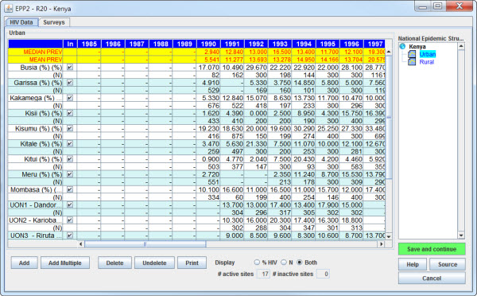
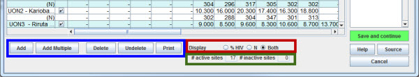
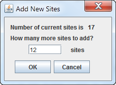
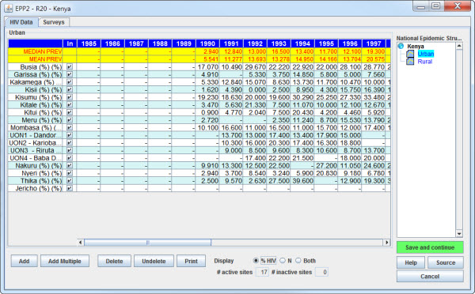

On the Project page each sub-population you have defined will be fit with a curve describing the past and future history of that component of the epidemic. This requires entering HIV surveillance data for each sub-population you have included. The HIV Data page allows you to enter both the prevalence measurements and sample sizes from surveillance sites for each sub-population.
The data required for each sub-population includes:
Each sub-population can include as many surveillance sites as needed. You may add additional sites using the Add and Add Multiple buttons at the bottom of the page.
The basic form of the HIV Data Entry Page, shown below, will be familiar to anyone who has worked with spreadsheets. It consists of a separate spreadsheet for entering HIV prevalence data for each sub-population over time. You move between the sub-populations by clicking on the sub-population name in the National Epidemic Structure tree on the right hand side of the page.

The surveillance data for the sub-population highlighted in light blue in the National Epidemic Structure tree is displayed as a spreadsheet. This spreadsheet is organized vertically by site and horizontally by year. In EPP each surveillance site is represented by two horizontal lines with its data running from right to left. The first line, with the site name followed by "(%)", shows the HIV prevalence (in percent, a value between 0 and 100%) and the next line, with an "(N)" shows the sample sizes for each prevalence point from that site. The color of the site line pairs (% line and N line) alternates between white and light blue to make it clear which prevalence and sample size data goes with which site.
The two yellow colored lines at the top of the table give means and medians across all sites for each year. If there is no data for that year, the corresponding mean and median cell is left blank. All means and medians are calculated using sample sizes. Means are weighted by the sample size. For medians, values are sorted into numerical order and then a running sum of the sample sizes is formed starting from the smallest prevalence value. When that sum reaches or exceeds 50% of the sum of all sample sizes, that value is used as the median. If the sample sizes sum to exactly 50% the average of the current value and the next value is used as the median. If all sample sizes are equal this reduces to the standard mid-point estimate for median of an odd number of prevalence values and the average of the middle two values for an even number of prevalence values.
At the top of the table are column headers in blue. Each column has the following contents:
At the bottom of the page are a number of buttons, display settings and information boxes.

The site buttons, highlighted in the blue box above, are used to add and delete sites. More specifically they are:

The display options, highlighted in the red box above, allow you to select what is being displayed in the table. The options are:
The figure below illustrates what happens when the “% HIV” entry is chosen.

The active site counters, highlighted by the green box, display the number of active and inactive sites. This makes it easier to keep track of sites which have been turned off, especially when there are more sites than are visible on the screen.
After you finish typing in all site data for a particular sub-population, click on the green Save and continue button on the lower right. This will move you to the next sub-population in the prevalence tree and allow you to enter the surveillance data from that sub-population. After you enter the data for the final sub-population, clicking on Save and continue will take you to the Surveys page, the second step in the process of entering HIV data for your sub-populations.
The data spreadsheet has been set up to allow cutting of data on prevalence and sample sizes from an Excel spreadsheet or the old version of EPP and pasting it into the spreadsheet. To do this:
If your site names are immediately adjacent to your data in your Excel sheet and your surveillance data starts in 1985, you can select the site names and the data together in Excel, single click on the first site name cell and then type <CTRL>-V to paste the entire set of data. If your site names are not organized this way or you wish to start with some data year other than 1985, you will need to copy and paste in two steps. First copy the site names from Excel and paste them by clicking in the first data entry cell in the site name column. Then copy the numerical data using the instructions above to the appropriate cells.
If pasting data from the old version of EPP or from an Excel spreadsheet that only contains HIV prevalence values, it is important to first change the EPP table to contain only the HIV prevalence ("% HIV"). If you paste into the expanded table with both HIV prevalence and sample sizes displayed, prevalence data may get put into sample size cells. Always check your values after you paste to ensure that the data has gone into the proper sites and year columns.
You should always document the sources and authors of the surveillance data used and of any additional ad hoc studies you may incorporate into the data set for a particular sub-population. This is done by hitting the "Source" button. In the box which pops up you should enter your surveillance data source, any adjustments you made to the data set, e.g., removal of outliers from a particular site or excluding a surveillance site because the trend is problematic, and any other information that is needed for someone reviewing your projections later. Once this is done, click "Save and continue" to save the surveillance data for that sub-population and move on to the next one. Once you have entered surveillance data for all sub-populations, click on Save and continue and you will be moved on to the Surveys page.